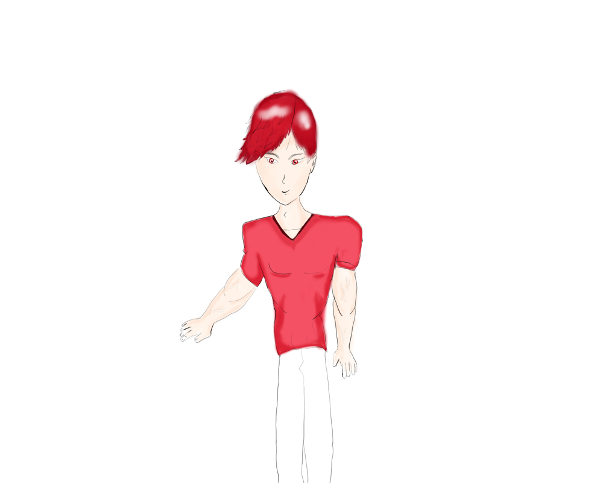

Testando com Imagens
As imagens devem estar em uma mesma pasta!
Imagens pesadas não são adequadas para sites, por isso é importante diminuir tamanho abaixo de 1500 x 1000 e diminuir resolução para abaixo de 80.
Os melhores editores são krita e gimp pois são softwares de código aberto. Que permite um poderoso desempenho.
Importante também é verificar se a imagem a ser utilizada possui ou não direitos autoreais, sites como pexels e pixabay permite uma utilização das imagens livremente.
Senão é importante sempre pedir o direito de imagem caso queira publicar alguma imagem.

Podemos também carregar arquivos que estão em subpastas


Também podemos carregar imagens externas através de links de internet

Adicionando emojis: basta ir na página de emoji:
https://emojis.wiki/pt/whatsapp/
Copiar o Código de interesse e inserir com '&#x'código;
🍂
Testando Favicon
Inserindo ícone na aba da internet
Em head depois de initial scale inserir o comando
link rel="shortcut icon"href=""
O favicon pode ser realizado no site da favicon ou qualquer editor de imagem que tenha possibilidade de exportar .ico
Site: https://favicon.io